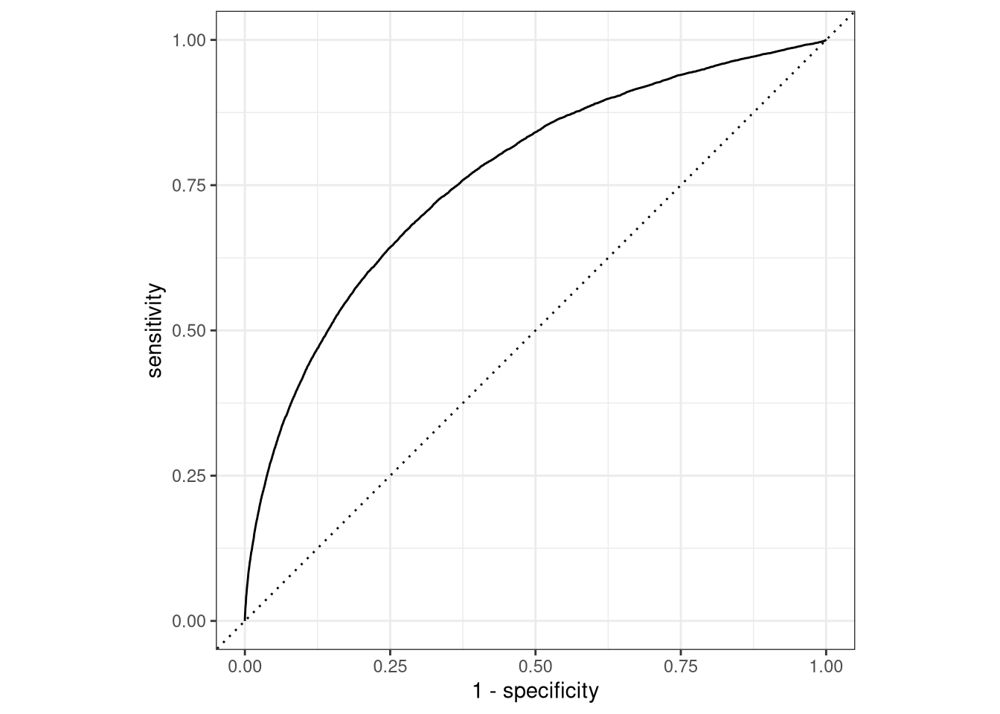

library(tidymodels) # for the recipes package, along with the rest of
#tidymodels
# Helper packages
library(nycflights13) # for flight data
library(skimr) # for variable summariesPreprocess your data with recipes
INTRODUCTION
In our Build a Model article, we learned how to specify and train models with different engines using the parsnip package. In this article, we’ll explore another tidymodels package, recipes, which is designed to help you preprocess your data before training your model. Recipes are built as a series of preprocessing steps, such as:
converting qualitative predictors to indicator variables (also known as dummy variables),
transforming data to be on a different scale (e.g., taking the logarithm of a variable),
transforming whole groups of predictors together,
extracting key features from raw variables (e.g., getting the day of the week out of a date variable),
and so on. If you are familiar with R’s formula interface, a lot of this might sound familiar and like what a formula already does. Recipes can be used to do many of the same things, but they have a much wider range of possibilities. This article shows how to use recipes for modeling.
To use code in this article, you will need to install the following packages: nycflights13, skimr, and tidymodels.
THE NEW YORK CITY FLIGHT DATA
Let’s use the nycflights13 data to predict whether a plane arrives more than 30 minutes late. This data set contains information on 325,819 flights departing near New York City in 2013. Let’s start by loading the data and making a few changes to the variables:
set.seed(123)
flight_data <- flights |>
mutate(
# Convert the arrival delay to a factor
arr_delay = ifelse(arr_delay >= 30, "late", "on_time"),
arr_delay = factor(arr_delay),
# We will use the date (not date-time) in the recipe below
date = lubridate::as_date(time_hour)
) |>
# Include the weather data
inner_join(weather, by = c("origin", "time_hour")) |>
# Only retain the specific columns we will use
dplyr::select(dep_time, flight, origin, dest, air_time, distance,
carrier, date, arr_delay, time_hour) |>
# Exclude missing data
na.omit() |>
# For creating models, it is better to have qualitative columns
# encoded as factors (instead of character strings)
mutate_if(is.character, as.factor)We can see that about 16% of the flights in this data set arrived more than 30 minutes late.
flight_data |>
count(arr_delay) |>
mutate(prop = n/sum(n)) |>
kable()| arr_delay | n | prop |
|---|---|---|
| late | 52540 | 0.1612552 |
| on_time | 273279 | 0.8387448 |
Before we start building up our recipe, let’s take a quick look at a few specific variables that will be important for both preprocessing and modeling.
First, notice that the variable we created called arr_delay is a factor variable; it is important that our outcome variable for training a logistic regression model is a factor.
glimpse(flight_data)Rows: 325,819
Columns: 10
$ dep_time <int> 517, 533, 542, 544, 554, 554, 555, 557, 557, 558, 558, 558, …
$ flight <int> 1545, 1714, 1141, 725, 461, 1696, 507, 5708, 79, 301, 49, 71…
$ origin <fct> EWR, LGA, JFK, JFK, LGA, EWR, EWR, LGA, JFK, LGA, JFK, JFK, …
$ dest <fct> IAH, IAH, MIA, BQN, ATL, ORD, FLL, IAD, MCO, ORD, PBI, TPA, …
$ air_time <dbl> 227, 227, 160, 183, 116, 150, 158, 53, 140, 138, 149, 158, 3…
$ distance <dbl> 1400, 1416, 1089, 1576, 762, 719, 1065, 229, 944, 733, 1028,…
$ carrier <fct> UA, UA, AA, B6, DL, UA, B6, EV, B6, AA, B6, B6, UA, UA, AA, …
$ date <date> 2013-01-01, 2013-01-01, 2013-01-01, 2013-01-01, 2013-01-01,…
$ arr_delay <fct> on_time, on_time, late, on_time, on_time, on_time, on_time, …
$ time_hour <dttm> 2013-01-01 05:00:00, 2013-01-01 05:00:00, 2013-01-01 05:00:…Second, there are two variables that we don’t want to use as predictors in our model, but that we would like to retain as identification variables that can be used to troubleshoot poorly predicted data points. These are flight, a numeric value, and time_hour, a date-time value.
Third, there are 104 flight destinations contained in dest and 16 distinct carriers.
flight_data |>
skimr::skim(dest, carrier) | Name | flight_data |
| Number of rows | 325819 |
| Number of columns | 10 |
| _______________________ | |
| Column type frequency: | |
| factor | 2 |
| ________________________ | |
| Group variables | None |
Variable type: factor
| skim_variable | n_missing | complete_rate | ordered | n_unique | top_counts |
|---|---|---|---|---|---|
| dest | 0 | 1 | FALSE | 104 | ATL: 16771, ORD: 16507, LAX: 15942, BOS: 14948 |
| carrier | 0 | 1 | FALSE | 16 | UA: 57489, B6: 53715, EV: 50868, DL: 47465 |
Because we’ll be using a simple logistic regression model, the variables dest and carrier will be converted to dummy variables. However, some of these values do not occur very frequently and this could complicate our analysis. We’ll discuss specific steps later in this article that we can add to our recipe to address this issue before modeling.
DATA SPLITTING
To get started, let’s split this single dataset into two: a training set and a testing set. We’ll keep most of the rows in the original dataset (subset chosen randomly) in the training set. The training data will be used to fit the model, and the testing set will be used to measure model performance.
To do this, we can use the rsample package to create an object that contains the information on how to split the data, and then two more rsample functions to create data frames for the training and testing sets:
# Fix the random numbers by setting the seed
# This enables the analysis to be reproducible when random numbers are used
set.seed(222)
# Put 3/4 of the data into the training set
data_split <- initial_split(flight_data, prop = 3/4)
# Create data frames for the two sets:
train_data <- training(data_split)
test_data <- testing(data_split)CREATE RECIPE AND ROLES
To get started, let’s create a recipe for a simple logistic regression model. Before training the model, we can use a recipe to create a few new predictors and conduct some preprocessing required by the model.
Let’s initiate a new recipe:
flights_rec <-
recipe(arr_delay ~ ., data = train_data)
flights_rec── Recipe ──────────────────────────────────────────────────────────────────────── Inputs Number of variables by roleoutcome: 1
predictor: 9The recipe() function as we used it here has two arguments:
A formula. Any variable on the left-hand side of the tilde (
~) is considered the model outcome (here,arr_delay). On the right-hand side of the tilde are the predictors. Variables may be listed by name, or you can use the dot (.) to indicate all other variables as predictors.The data. A recipe is associated with the data set used to create the model. This will typically be the training set, so
data = train_datahere. Naming a data set doesn’t actually change the data itself; it is only used to catalog the names of the variables and their types, like factors, integers, dates, etc.
Now we can add roles to this recipe. We can use the update_role() function to let recipes know that flight and time_hour are variables with a custom role that we called "ID" (a role can have any character value). Whereas our formula included all variables in the training set other than arr_delay as predictors, this tells the recipe to keep these two variables but not use them as either outcomes or predictors.
flights_rec <-
recipe(arr_delay ~ ., data = train_data) |>
update_role(flight, time_hour, new_role = "ID") This step of adding roles to a recipe is optional; the purpose of using it here is that those two variables can be retained in the data but not included in the model. This can be convenient when, after the model is fit, we want to investigate some poorly predicted value. These ID columns will be available and can be used to try to understand what went wrong.
To get the current set of variables and roles, use the summary() function:
summary(flights_rec)# A tibble: 10 × 4
variable type role source
<chr> <list> <chr> <chr>
1 dep_time <chr [2]> predictor original
2 flight <chr [2]> ID original
3 origin <chr [3]> predictor original
4 dest <chr [3]> predictor original
5 air_time <chr [2]> predictor original
6 distance <chr [2]> predictor original
7 carrier <chr [3]> predictor original
8 date <chr [1]> predictor original
9 time_hour <chr [1]> ID original
10 arr_delay <chr [3]> outcome originalCREATE FEATURES
Now we can start adding steps onto our recipe using the pipe operator. Perhaps it is reasonable for the date of the flight to have an effect on the likelihood of a late arrival. A little bit of feature engineering might go a long way to improving our model. How should the date be encoded into the model? The date column has an R date object so including that column “as is” will mean that the model will convert it to a numeric format equal to the number of days after a reference date:
flight_data |>
distinct(date) |>
mutate(numeric_date = as.numeric(date)) # A tibble: 364 × 2
date numeric_date
<date> <dbl>
1 2013-01-01 15706
2 2013-01-02 15707
3 2013-01-03 15708
4 2013-01-04 15709
5 2013-01-05 15710
6 2013-01-06 15711
7 2013-01-07 15712
8 2013-01-08 15713
9 2013-01-09 15714
10 2013-01-10 15715
# ℹ 354 more rowsIt’s possible that the numeric date variable is a good option for modeling; perhaps the model would benefit from a linear trend between the log-odds of a late arrival and the numeric date variable. However, it might be better to add model terms derived from the date that have a better potential to be important to the model. For example, we could derive the following meaningful features from the single date variable:
the day of the week,
the month, and
whether or not the date corresponds to a holiday.
Let’s do all three of these by adding steps to our recipe:
flights_rec <-
recipe(arr_delay ~ ., data = train_data) |>
update_role(flight, time_hour, new_role = "ID") |>
step_date(date, features = c("dow", "month")) |>
step_holiday(date,
holidays = timeDate::listHolidays("US"),
keep_original_cols = FALSE)What do each of these steps do?
With step_date(), we created two new factor columns with the appropriate day of the week and the month.
With
step_holiday(), we created a binary variable indicating whether the current date is a holiday or not. The argument value oftimeDate::listHolidays("US")uses thetimeDatepackage to list the 18 standard US holidays.With
keep_original_cols = FALSE, we remove the original date variable since we no longer want it in the model. Many recipe steps that create new variables have this argument.
Next, we’ll turn our attention to the variable types of our predictors. Because we plan to train a logistic regression model, we know that predictors will ultimately need to be numeric, as opposed to nominal data like strings and factor variables. In other words, there may be a difference in how we store our data (in factors inside a data frame), and how the underlying equations require them (a purely numeric matrix).
For factors like dest and origin, standard practice is to convert them into dummy or indicator variables to make them numeric. These are binary values for each level of the factor. For example, our origin variable has values of "EWR", "JFK", and "LGA". The standard dummy variable encoding, shown below, will create two numeric columns of the data that are 1 when the originating airport is "JFK" or "LGA" and zero otherwise, respectively.
INSERT TABLE HERE
But, unlike the standard model formula methods in R, a recipe does not automatically create these dummy variables for you; you’ll need to tell your recipe to add this step. This is for two reasons. First, many models do not require numeric predictors, so dummy variables may not always be preferred. Second, recipes can also be used for purposes outside of modeling, where non-dummy versions of the variables may work better. For example, you may want to make a table or a plot with a variable as a single factor. For those reasons, you need to explicitly tell recipes to create dummy variables using step_dummy():
flights_rec <-
recipe(arr_delay ~ ., data = train_data) |>
update_role(flight, time_hour, new_role = "ID") |>
step_date(date, features = c("dow", "month")) |>
step_holiday(date,
holidays = timeDate::listHolidays("US"),
keep_original_cols = FALSE) %>%
step_dummy(all_nominal_predictors())
flights_rec── Recipe ──────────────────────────────────────────────────────────────────────── Inputs Number of variables by roleoutcome: 1
predictor: 7
ID: 2── Operations • Date features from: date• Holiday features from: date• Dummy variables from: all_nominal_predictors()Here, we did something different than before: instead of applying a step to an individual variable, we used selectors to apply this recipe step to several variables at once, all_nominal_predictors(). The selector functions can be combined to select intersections of variables.
At this stage in the recipe, this step selects the origin, dest, and carrier variables. It also includes two new variables, date_dow and date_month, that were created by the earlier step_date().
More generally, the recipe selectors mean that you don’t always have to apply steps to individual variables one at a time. Since a recipe knows the variable type and role of each column, they can also be selected (or dropped) using this information.
We need one final step to add to our recipe. Since carrier and dest have some infrequently occurring factor values, it is possible that dummy variables might be created for values that don’t exist in the training set. For example, there is one destination that is only in the test set:
test_data |>
distinct(dest) |>
anti_join(train_data)Joining with `by = join_by(dest)`# A tibble: 1 × 1
dest
<fct>
1 LEX When the recipe is applied to the training set, a column is made for LEX because the factor levels come from flight_data (not the training set), but this column will contain all zeros. This is a “zero-variance predictor” that has no information within the column. While some R functions will not produce an error for such predictors, it usually causes warnings and other issues. step_zv() will remove columns from the data when the training set data have a single value, so it is added to the recipe after step_dummy():
flights_rec <-
recipe(arr_delay ~ ., data = train_data) |>
update_role(flight, time_hour, new_role = "ID") |>
step_date(date, features = c("dow", "month")) |>
step_holiday(date,
holidays = timeDate::listHolidays("US"),
keep_original_cols = FALSE) |>
step_dummy(all_nominal_predictors()) |>
step_zv(all_predictors())Now we’ve created a specification of what should be done with the data. How do we use the recipe we made?
FIT A MODEL WITH A RECIPE
Let’s use logistic regression to model the flight data. As we saw in Build a Model, we start by building a model specification using the parsnip package:
lr_mod <-
logistic_reg() |>
set_engine("glm")We will want to use our recipe across several steps as we train and test our model. We will:
Process the recipe using the training set: This involves any estimation or calculations based on the training set. For our recipe, the training set will be used to determine which predictors should be converted to dummy variables and which predictors will have zero-variance in the training set, and should be slated for removal.
Apply the recipe to the training set: We create the final predictor set on the training set.
Apply the recipe to the test set: We create the final predictor set on the test set. Nothing is recomputed and no information from the test set is used here; the dummy variable and zero-variance results from the training set are applied to the test set.
To simplify this process, we can use a model workflow, which pairs a model and recipe together. This is a straightforward approach because different recipes are often needed for different models, so when a model and recipe are bundled, it becomes easier to train and test workflows. We’ll use the workflows package from tidymodels to bundle our parsnip model (lr_mod) with our recipe (flights_rec).
flights_wflow <-
workflow() %>%
add_model(lr_mod) %>%
add_recipe(flights_rec)
flights_wflow══ Workflow ════════════════════════════════════════════════════════════════════
Preprocessor: Recipe
Model: logistic_reg()
── Preprocessor ────────────────────────────────────────────────────────────────
4 Recipe Steps
• step_date()
• step_holiday()
• step_dummy()
• step_zv()
── Model ───────────────────────────────────────────────────────────────────────
Logistic Regression Model Specification (classification)
Computational engine: glm Now, there is a single function that can be used to prepare the recipe and train the model from the resulting predictors:
flights_fit <-
flights_wflow |>
fit(data = train_data)This object has the finalized recipe and fitted model objects inside. You may want to extract the model or recipe objects from the workflow. To do this, you can use the helper functions extract_fit_parsnip() and extract_recipe(). For example, here we pull the fitted model object then use the broom::tidy() function to get a tidy tibble of model coefficients:
flights_fit |>
extract_fit_parsnip() |>
tidy()# A tibble: 157 × 5
term estimate std.error statistic p.value
<chr> <dbl> <dbl> <dbl> <dbl>
1 (Intercept) 7.28 2.73 2.67 7.64e- 3
2 dep_time -0.00166 0.0000141 -118. 0
3 air_time -0.0440 0.000563 -78.2 0
4 distance 0.00507 0.00150 3.38 7.32e- 4
5 date_USCPulaskisBirthday 0.807 0.139 5.80 6.57e- 9
6 date_USChristmasDay 1.33 0.177 7.49 6.93e-14
7 date_USColumbusDay 0.724 0.170 4.25 2.13e- 5
8 date_USDecorationMemorialDay 0.585 0.117 4.98 6.32e- 7
9 date_USElectionDay 0.948 0.190 4.98 6.25e- 7
10 date_USGoodFriday 1.25 0.167 7.45 9.40e-14
# ℹ 147 more rowsUSE A TRAINED WORKFLOW TO PREDICT
Our goal was to predict whether a plane arrives more than 30 minutes late. We have just:
Built the model (
lr_mod),Created a preprocessing recipe ( flights_rec ),
Bundled the model and recipe (
flights_wflow), andTrained our workflow using a single call to
fit().
The next step is to use the trained workflow (flights_fit) to predict with the unseen test data, which we will do with a single call to predict(). The predict() method applies the recipe to the new data, then passes them to the fitted model.
predict(flights_fit, new_data = test_data)# A tibble: 81,455 × 1
.pred_class
<fct>
1 on_time
2 on_time
3 on_time
4 on_time
5 on_time
6 on_time
7 on_time
8 on_time
9 on_time
10 on_time
# ℹ 81,445 more rowsBecause our outcome variable here is a factor, the output from predict() returns the predicted class: late versus on_time. But, let’s say we want the predicted class probabilities for each flight instead. To return those, we can specify type = "prob" when we use predict() or use augment() with the model plus test data to save them together:
predict(flights_fit, new_data = test_data, type = "prob")# A tibble: 81,455 × 2
.pred_late .pred_on_time
<dbl> <dbl>
1 0.0547 0.945
2 0.0515 0.949
3 0.0361 0.964
4 0.0386 0.961
5 0.0384 0.962
6 0.0249 0.975
7 0.0366 0.963
8 0.0191 0.981
9 0.0646 0.935
10 0.0687 0.931
# ℹ 81,445 more rows# Or
flights_aug <-
augment(flights_fit, test_data)
# The data look like:
flights_aug |>
select(arr_delay, time_hour, flight, .pred_class, .pred_on_time)# A tibble: 81,455 × 5
arr_delay time_hour flight .pred_class .pred_on_time
<fct> <dttm> <int> <fct> <dbl>
1 on_time 2013-01-01 05:00:00 1545 on_time 0.945
2 on_time 2013-01-01 05:00:00 1714 on_time 0.949
3 on_time 2013-01-01 06:00:00 507 on_time 0.964
4 on_time 2013-01-01 06:00:00 5708 on_time 0.961
5 on_time 2013-01-01 06:00:00 71 on_time 0.962
6 on_time 2013-01-01 06:00:00 194 on_time 0.975
7 on_time 2013-01-01 06:00:00 1124 on_time 0.963
8 on_time 2013-01-01 05:00:00 1806 on_time 0.981
9 on_time 2013-01-01 06:00:00 1187 on_time 0.935
10 on_time 2013-01-01 06:00:00 4650 on_time 0.931
# ℹ 81,445 more rowsNow that we have a tibble with our predicted class probabilities, how will we evaluate the performance of our workflow? We can see from these first few rows that our model predicted these 5 on time flights correctly because the values of .pred_on_time are p > .50. But we also know that we have 81,455 rows total to predict. We would like to calculate a metric that tells how well our model predicted late arrivals, compared to the true status of our outcome variable, arr_delay.
Let’s use the area under the ROC curve as our metric, computed using roc_curve() and roc_auc() from the yardstick package.
To generate a ROC curve, we need the predicted class probabilities for late and on_time, which we just calculated in the code chunk above. We can create the ROC curve with these values, using roc_curve() and then piping to the autoplot() method:
flights_aug |>
roc_curve(truth = arr_delay, .pred_late) |>
autoplot()
Similarly, roc_auc() estimates the area under the curve:
flights_aug |>
roc_auc(truth = arr_delay, .pred_late)# A tibble: 1 × 3
.metric .estimator .estimate
<chr> <chr> <dbl>
1 roc_auc binary 0.764Not too bad! We leave it to the reader to test out this workflow without this recipe. You can use workflows::add_formula(arr_delay ~ .) instead of add_recipe() (remember to remove the identification variables first!), and see whether our recipe improved our model’s ability to predict late arrivals.
SESSION INFORMATION
sessionInfo()R version 4.5.1 (2025-06-13)
Platform: x86_64-redhat-linux-gnu
Running under: Red Hat Enterprise Linux 9.6 (Plow)
Matrix products: default
BLAS/LAPACK: FlexiBLAS OPENBLAS-OPENMP; LAPACK version 3.9.0
locale:
[1] LC_CTYPE=en_US.UTF-8 LC_NUMERIC=C
[3] LC_TIME=en_US.UTF-8 LC_COLLATE=en_US.UTF-8
[5] LC_MONETARY=en_US.UTF-8 LC_MESSAGES=en_US.UTF-8
[7] LC_PAPER=en_US.UTF-8 LC_NAME=C
[9] LC_ADDRESS=C LC_TELEPHONE=C
[11] LC_MEASUREMENT=en_US.UTF-8 LC_IDENTIFICATION=C
time zone: America/New_York
tzcode source: system (glibc)
attached base packages:
[1] stats graphics grDevices utils datasets methods base
other attached packages:
[1] skimr_2.2.1 nycflights13_1.0.2 yardstick_1.3.2 workflowsets_1.1.1
[5] workflows_1.3.0 tune_2.0.1 tailor_0.1.0 rsample_1.3.1
[9] recipes_1.3.1 parsnip_1.3.3 modeldata_1.5.1 infer_1.0.9
[13] dials_1.4.2 broom_1.0.10 tidymodels_1.4.1 scales_1.4.0
[17] lubridate_1.9.4 forcats_1.0.1 stringr_1.5.2 dplyr_1.1.4
[21] purrr_1.1.0 readr_2.1.5 tidyr_1.3.1 tibble_3.3.0
[25] ggplot2_4.0.0 tidyverse_2.0.0 knitr_1.50
loaded via a namespace (and not attached):
[1] tidyselect_1.2.1 timeDate_4051.111 farver_2.1.2
[4] clock_0.7.3 S7_0.2.0 fastmap_1.2.0
[7] digest_0.6.37 rpart_4.1.24 timechange_0.3.0
[10] lifecycle_1.0.4 survival_3.8-3 magrittr_2.0.4
[13] compiler_4.5.1 rlang_1.1.6 tools_4.5.1
[16] utf8_1.2.6 yaml_2.3.10 data.table_1.17.8
[19] labeling_0.4.3 htmlwidgets_1.6.4 repr_1.1.7
[22] DiceDesign_1.10 RColorBrewer_1.1-3 withr_3.0.2
[25] nnet_7.3-20 grid_4.5.1 sparsevctrs_0.3.4
[28] future_1.67.0 globals_0.18.0 MASS_7.3-65
[31] dichromat_2.0-0.1 cli_3.6.5 rmarkdown_2.30
[34] generics_0.1.4 rstudioapi_0.17.1 future.apply_1.20.0
[37] tzdb_0.5.0 splines_4.5.1 parallel_4.5.1
[40] base64enc_0.1-3 vctrs_0.6.5 hardhat_1.4.2
[43] Matrix_1.7-4 jsonlite_2.0.0 hms_1.1.4
[46] listenv_0.9.1 gower_1.0.2 glue_1.8.0
[49] parallelly_1.45.1 codetools_0.2-20 stringi_1.8.7
[52] gtable_0.3.6 GPfit_1.0-9 pillar_1.11.1
[55] furrr_0.3.1 htmltools_0.5.8.1 ipred_0.9-15
[58] lava_1.8.1 R6_2.6.1 lhs_1.2.0
[61] evaluate_1.0.5 lattice_0.22-7 backports_1.5.0
[64] class_7.3-23 Rcpp_1.1.0 prodlim_2025.04.28
[67] xfun_0.53 pkgconfig_2.0.3